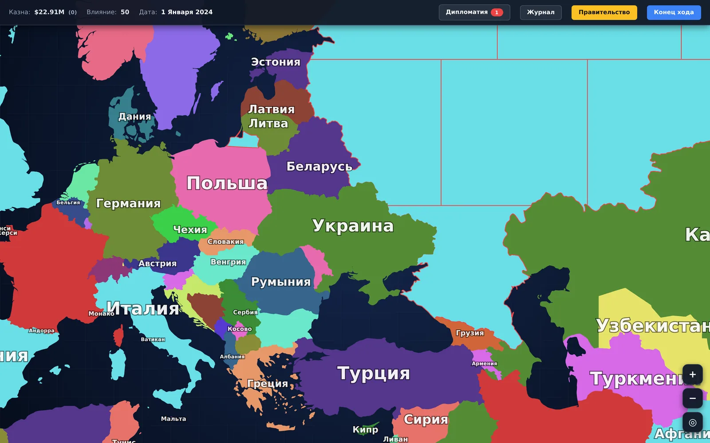
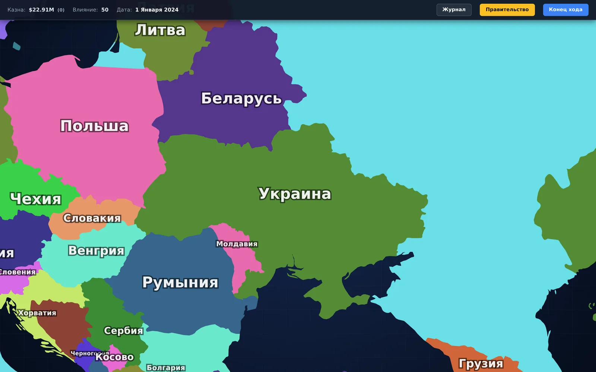
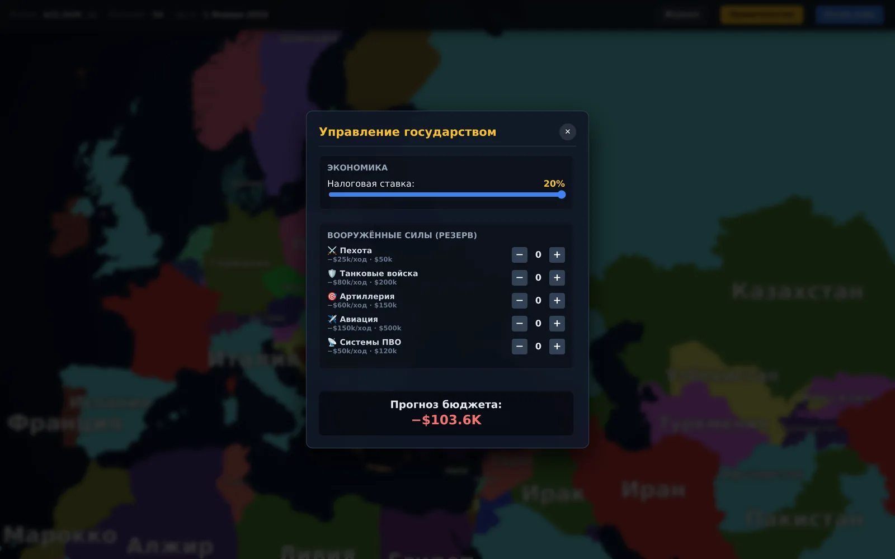
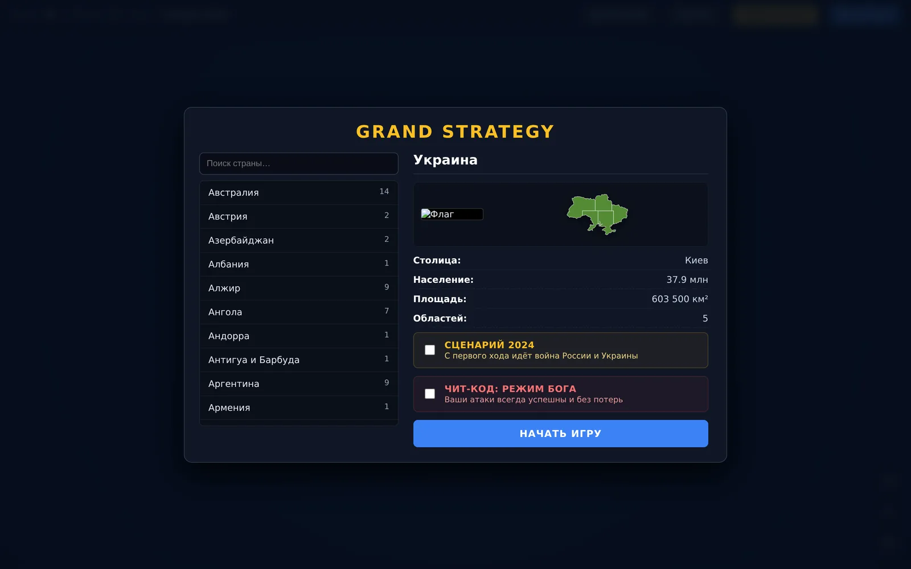

Згенерована карта світу
743 області, нарізані з геометрії 236 держав. Проєкція Web Mercator у системі координат viewBox 1200×800, граф областей кожної країни гарантовано зв'язний.
Покрокова політична стратегія на карті світу. Оберіть будь-яку з 236 держав, керуйте бюджетом і армією, віддавайте накази областям і закривайте хід. Карта не намальована вручну — вона згенерована з реальних географічних даних.
Ігрова карта світу зазвичай або малюється дизайнером, або береться готовою. Тут вона обчислюється: офлайн-генератор на Node.js бере геометрію країн із Natural Earth, ріже кожну державу сіткою квадратів і обрізає шматки по державному кордону.
Кількість областей залежить від площі за формулою N = clamp(round(20 · (S / S_max) ^ 0.4145), 1, 20). Опорні точки правила підібрані так, щоб велика держава отримала 20 областей, Україна — 5, Молдова — 2, а мікродержава — одну.
Дрібні шматки, менші за 30% середньої площі, приклеюються до сусіда з найдовшим спільним кордоном. Назви областей беруться від найбільшого міста всередині; якщо міст немає — за стороною світу, причому сектор 3×3 гарантує, що назви не повторяться.
Сусідство рахується по геометрії: спільний сухопутний кордон плюс морські переправи коротші за 120 км. Генератор детермінований — однаковий вхід завжди дає однаковий вихід, тому карту можна перезбирати без сюрпризів.
743 області, нарізані з геометрії 236 держав. Проєкція Web Mercator у системі координат viewBox 1200×800, граф областей кожної країни гарантовано зв'язний.
Камера з панорамуванням, зумом колесом і жестом pinch, підписи країн із масштабуванням за рівнем наближення, маркери армій — усе без картографічних бібліотек.
Податкова ставка від 1% до 20%, прогноз бюджету на хід, населення, нафта, аграрний та індустріальний потенціал кожної області.
Піхота, танки, артилерія, авіація та ППО. У кожного — атака, захист, вартість утримання, вимога до індустрії області та список того, кого він контрить.
Марш, атака, скасування наказу — усе накопичується у журналі та розв'язується одночасно наприкінці ходу, як у класичних покрокових стратегіях.
Координати й населення міст беруться з відкритих наборів даних і використовуються для назв областей та розрахунку їхньої ваги.
Репозиторій поділений навпіл: js/ — це рушій, який вантажиться у браузер, а tools/ — офлайн-генератор на Node.js, який один раз перемелює географічні дані у статичні довідники. Файли в js/data/ згенеровані й ніколи не правляться руками.
index.html розмітка й стилі інтерфейсу
js/
main.js контролер і стартовий екран
GameData.js модель світу, накази, розв'язання ходу
MapEngine.js відрисовка карти, камера, підписи
UIManager.js бічна панель, модалки, журнал
GameLoop.js хід і економіка
UnitsDB.js роди військ
data/ ЗГЕНЕРОВАНО — вручну не правити
RegionsDB.js 743 області · 1.5 МБ SVG-шляхів
CountriesDB.js 236 держав
CitiesDB.js 1013 міст
NeighborsDB.js граф сусідства
tools/ офлайн-генератор, ~40 с на перезбірку
build_map.js точка входу генератора
lib/geo.js проєкція Web Mercator, константи
lib/svgmap.js нарізка країн і обрізка по кордону
lib/translit.js транслітерація назв міст
Натисніть на зображення, щоб відкрити його на весь екран. Стрілки ← → гортають галерею.



